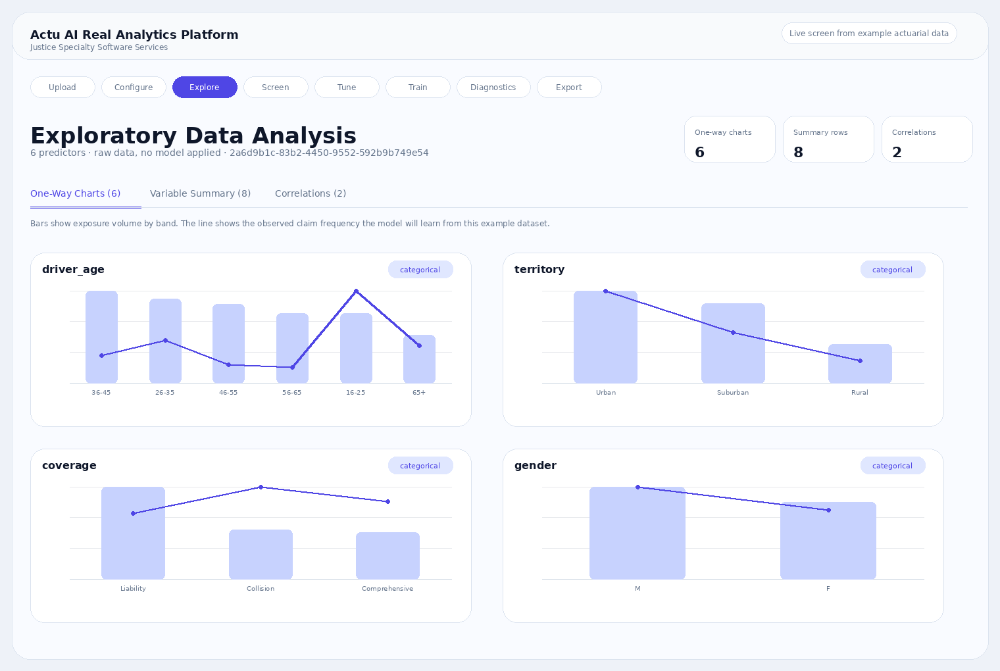
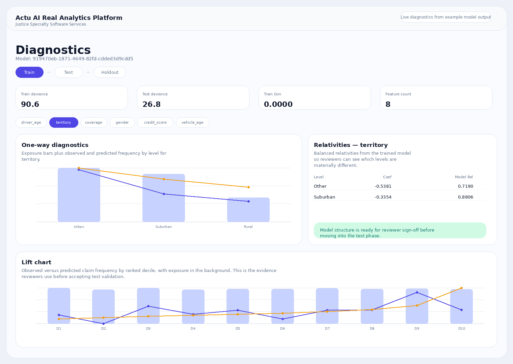

Actuarial ideas become working apps
Move from a business question, pricing concept, or workflow need into a structured application that teams can review and operate.
Actu AI Real Analytics Platform is the flagship platform from Justice Specialty Software Services, built so actuarial teams can move from prompt, workbook, or business concept to a reviewable analytical application without giving up governance, auditability, or enterprise operating discipline.
Turn actuarial concepts, workbook logic, and guided prompts into portable analytics applications.
Governed readiness, lifecycle, audit, and publish workflows.
Designed for downstream analytics, SQL-ready reporting, and client-specific deployment boundaries.
Use prompts and workbook logic to generate structured application drafts that can be refined instead of rebuilt from scratch.
Keep readiness, lifecycle management, diagnostics, SQL export, and audit-aware workflows inside one enterprise operating surface.
The platform brings idea capture, workbook-to-app generation, diagnostics, export, and operational review into one product surface built for actuarial teams and enterprise stakeholders.
Move from a business question, pricing concept, or workflow need into a structured application that teams can review and operate.
Use AI to accelerate application generation, then refine the result through readiness checks, lifecycle control, and explicit publish gates.
Deliver diagnostics, collaboration, SQL-ready exports, and executive-ready reporting from one governed operating surface.
The roadmap is broader than one actuarial workflow. Justice Specialty Software Services is building an enterprise platform where actuaries can use AI to generate client-specific analytics applications and still operate them with enterprise discipline.
Turn Excel-based logic, actuarial concepts, and guided prompting into structured application drafts that can be reviewed and refined.
Support pricing, diagnostics, screening, training, comparison, and export as reusable applications rather than one-off tools.
Use readiness checks, lifecycle management, PR-first AI-assisted delivery, and structured promotion across dev, test, and prod.
Push structured output into reporting stores and downstream tools such as Power BI and client-specific decision support dashboards.
Support saved analyses, read-only sharing, ownership-aware editing, and app-specific history across client workflows.
Deploy different client apps and workflow surfaces on top of a shared enterprise platform with clear customization and support boundaries.
These screens now come from the actual product flow and example dataset, so buyers can see how Actu AI Real Analytics Platform handles exploratory analysis and governed model diagnostics in practice.


Justice Specialty Software Services is building Actu AI Real Analytics Platform so actuarial teams can convert ideas into analytics without sacrificing governance, reviewability, or operational control.
Use AI to accelerate application delivery while keeping publish, review, approval, and ownership boundaries explicit.
Deploy different applications, analytical screens, and workflows on top of a shared enterprise platform instead of rebuilding one-off tooling.
Bring diagnostics, export, collaboration, and environment-aware controls into one supportable product surface.